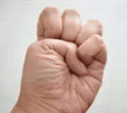

金刚长寿功
金刚长寿功一、八部金刚功（日练·阳法）起式第一部：双手插顶利三焦第二部：手足前后固肾腰第三部：调理脾肤需单举第四部：左肝右肺如射雕第五部：回头望足去心疾第六部：五劳七伤向后瞧第七部：凤凰展翅周身力第八部：两足顿顿饮嗜消收功二、八部长寿功（月练·阴法）第一部：窃吃昆仑长生酒第二部：升降日月任督走第三部：内转太极行八卦第四部：大转逍遥乐无忧第五部：大雁腾空降吉祥第六部：浪里行舟漂海洋第七部：白鹤踏波定神思第八部：鱼沉海底寿命长
由招熟而渐悟懂劲，由懂劲而阶及神明。
式之所动，劲之所生，欲右而先左，欲紧而先松，反而后动，灭而后生。
气息收发，随劲行止，无意则中，清静则归，关心则乱，必固则失。
明此要诀，以习神功。
一、八部金刚功（日练·阳法）
双手插顶利三焦，手足前后固肾腰。
调理脾肤需单举，左肝右肺如射雕。
回头望足去心疾，五劳七伤往后瞧。
凤凰展翅周身力，两足顿顿饮嗜消。
（顺序：三焦、水、土、木、金、火，扫除五劳七伤，畅通周身经血，促进积食消化）
起式
两脚开立，双手落于体侧。
双手绷劲后拧一次。
双手绷劲后拧两次。
双手绷劲后拧三次。
双手上提，气归中宫。
第一部：双手插顶利三焦
双手下放。
体侧伸平。
立掌。
向上会和于头顶。
并掌。
冲天。
落掌放平。
勾掌。
气归中宫。
x9。
第二部：手足前后固肾腰
合掌左进开脚。
前冲。
分开。
弓步落后。
掌根合拢，合掌上提。
隔空下推。
伸平起身。
合掌收回。
换向。
x9。
方拳收脚，气归中宫。
“合掌上提”这一步并不简单，他不是靠寸劲冲上去，而是靠内劲涌上去的。
同时，标准动作要求在上提过程中，始终保持掌根合拢，这个动作很像瑜伽中的双手背后合十式，只是金刚功的合掌动作指尖向下，瑜伽是指尖向上。
平时可以尝试利用座椅靠背、墙壁等借助外力，或用向后猛拍掌上提的寸劲将掌根于背后合拢紧贴后背，挺胸抬头，利用衣服的摩擦力卡住坚持一小会儿，假以时日，必有成就。
第三部：调理脾肤需单举
左开大步。
拳移左腰，左立拳如招财之猫，右平拳如覆食之碗。
开拳换掌，侧方脚跟向后外旋拧成平行站位，弓步上举下按。
内旋翻手，方拳回收。
拳移右腰，右立拳如招财之猫，左平拳如覆食之碗。
x9。
方拳收脚，气归中宫。
“弓步上举下按”这一步的“步法”很重要！它是上举下按的同时，侧方脚以脚尖为轴、脚跟向后向外旋，将双脚从开始的外八站位调整为平行站位，然后弓步上举下按，行气才能通达顺畅。
第四部：左肝右肺如射雕
左开大步。
双拳向左出掌伸平。
反向轮转上过头顶。
一次触底。
二次触底收拳。
左倾身体右压拳，内旋翻掌上经面。
逆向轮转，绕体推出。
起身搭箭。
拉弓。
探身存距，前手翻掌标出。
收拳换向。
x9。
双拳向左出掌伸平。
反向轮转上过头顶。
一次触底。
二次触底。
方拳收脚，气归中宫。
“倾身、举弓、搭箭、拉弓、放箭”，这五步按先后顺序，一步步来，保持节奏，不可连做。
拉弓手的力点着意在食指第二指节，小臂并非平行于地面，而是稍稍向下倾斜，挺胸充肺，力集肩背，要用后背上部肩胛撑力，这样才能气定神闲，通体舒展。
第五部：回头望足去心疾
左开大步。
左手舀水，经腰圆转，相对贴身下插，伸平朝内。
右手提气，经面下按弓步，掌心朝外，上前推出。
回头望足，微视后脚脚跟。
前冲后覆，外旋翻掌。
收拳换向。
x9。
方拳收脚，气归中宫。
这一部最后的伸展动作不容易协调，其实奥秘就是四个字：相对运动！
为便于描述，称向前的手为“按推手”，向后的手为“下插手”。
最后伸展的诀窍在于：下插手绝对位置不动！从腰间盘转至体侧以后，就等着按推手动作：前手“按”下弓步的同时身体迁移，此时下插手相对身体自然到位，前手“推”的同时后手直接运气伸展，确认步型“弓蹬”（前腿弓、后退蹬）即可。此动作伸展到位后，气脉极其通畅。
第六部：五劳七伤向后瞧
叉手上提。
下按。
头引体转，体带头回。
先左后右，归正脊柱。
x9。
翻掌散手，方拳收回，气归中宫。
这一部是治病的，要点在于：两眼似闭非闭，观想五脏六腑，致虚极，守静笃，气运病灶。


第七部：凤凰展翅周身力
左开大步。
双拳向左出掌伸平。
反向轮转上过头顶。
一次过顶。
二次过顶。
三次过顶。
顺势侧身，右手惯落而后劈，腰引左手三点地。
回手起身换方向。
x9。
双拳向左出掌伸平。
反向轮转上过头顶。
一次过顶。
一次触底。
方拳收脚，气归中宫。
“凤凰三点头”的步法是
点头的要点是下腰，而不是弓背。后手像是被人反擒住向上扳，形成对拉杠杆，上下通臂。通臂的意义，在于视臂膀为一个，即“一条臂膀，两个拳头”，两臂相通，阴阳互济，在物理上就是动量守恒。

第八部：两足顿顿饮嗜消
叉手上提。
下按。
并足叩齿。
提踵下振。1-2-345。
x9。
两脚开立。
收功
翻掌散手，指立对挤。
上提经面，分起两肩，经两胁缓缓落下，收功圆满。
张手分指，反复握拳，放松腿脚，原地跑跳，拍打折臂，放松自然。
要点总结：
功理顺序：先通三焦，发动全身气机。
再按「肾水、脾土、肝木、肺金、心火」序锻炼脏腑。
肾为先天之本，先固肾腰。
脾为后天之本，再调脾肤。（肤指皮肤与肌肉之间的隔膜细胞组织）
继而肝肺，最后君主之官。
练后，再行扫除五劳七伤。
凤凰展翅，畅通全身经络与循环气血。
两足顿顿，消解饮食阻滞与不良嗜好。
收功式一定要做，无论您练了哪部，休息前都要完成收功式。
不收功则散开元气不能归聚，就像庄稼成熟不收割，白白浪费成果。
所以必须收功。
金刚功中握的拳为方拳，大拇指盖住四指的指甲。

练习金刚功之前必须做充分的准备活动。
如活动膝盖、腰、手腕脚踝，抻筋、压腿等。
练功时要循序渐进，量力而行，避免扭伤。
涉及下蹲的动作膝盖不要超过脚尖。
饭后一小时内不能练，最好两小时后再练。
下雨、大风、大雾、打雷或天气恶劣时不要在室外练习。
每部最少做5遍，最多不超过9遍。对称的动作不能只练一边，练完左右对称动作算一遍。
练功前要全身放松、排除杂念、心志专一、意守本体、安静自然。
练习时要自然呼吸，千万不要关注或配合呼吸。
千万不要关注体感、气感等，有气感很正常，但不能执着，要无视这些。
从心理上不要把它当功法练，而是当广播体操练，这样动作更自然，心思简单，效果反而更好。
金刚功宜在早上太阳将出、未出时面对东方练习。
长寿功宜在晚上静时面对月亮练。
若受生活和工作的限制，也不强求。
要注意每套功都要从预备式起，练完后一定要收功。
从力度上讲，金刚功讲究内力、暗力。
整个用力过程，要有连绵不断的平等力和持续性，而不是外力、强力、僵力。
用自身七八成力，不要用全力，主要手用力。
初学时，动作不要求规范标准，一般的照动作做，不出大体就行。
随着体力和练功动作的熟练，逐步的达到标准化、规范化。
切忌操之过急。
女性生理期、怀孕期间禁止练习。
金刚功走血快，凡是身体上出现了出血症状都不要练，同时女性生理期是独有的排毒阶段，练功会影响自身排毒，而且生理期休息不会前功尽弃，生理期彻底结束后继续练习即可。
练功后如出现呕吐杂质、吐血、尿血、便血、泄泻、汗出如胶等现象时，精神正常或精力更加充沛，则属正常。如精神萎靡不振或疲惫乏力则要停练。检查动作是否符合要求，近日饮食起居是否失节。
习练金刚功多见下面几种现象：
- 嗜睡，这是因为精气神不够，练功后人体自我调节出现的现象，一般持续一到两周时间，因体质差异和练功勤快与否有差别。
- 拉肚子，不同于生病拉肚子，排泄物粘粘糊糊带黑色或暗灰色。虽然拉肚子，但精神很好，持续时间不长。
- 病情加重，感到病灶部位疼痛加剧，这是治病除根的关键时候，要继续练功攻克它不要怕，经过一段时间病症会减轻而至痊愈。
青岛一癌症患者练金刚功，累了就歇，歇了又练，一天练到晚，每部不超 9 遍，一天练多次，一个月后胃癌竟然消失。
二、八部长寿功（月练·阴法）
窃吃昆仑长生酒，升降日月任督走。
内转太极行八卦，大转逍遥乐无忧。
大雁腾空降吉祥，浪里行舟漂海洋。
白鹤踏波定神思，鱼沉海底寿命长。
（顺序：昆仑日月，太极八卦，回转逍遥。腾空浮海，踏波定神，沉入海底。）
第一部：窃吃昆仑长生酒
双手覆脐，左上右下。
舌搅齿内，观想病灶，至生津而咽下。
第二部：升降日月任督走
左开大步。双手内转一圈起手。
翻掌转立，成体前问手，向下向内滚动。内循环下降至会阴成马步，停一下。向上向外滚动，外循环上升至头顶成直膝，停一下。x1。
舌顶上颚，内循环下降，过颔落舌，至会阴成马步，停一下。外循环上升至头顶成直膝，停一下。x5。
双手内转一圈收手，覆脐收步，左上右下。
小周天：内气在体内沿任督二脉循环一周。内气从下丹田出发，经会阴、肛门上脊椎大道，沿督脉通“三关”（尾闾、夹脊和玉枕），至头顶泥丸经两耳根后分道落下会至上颚，再由舌抵上颚接回导至任脉，沿胸腹正中下行，回到下丹田。
前任，后督，前下，后上。下蹲时双手向内向下，意在推动内气沿着体前任脉下行；立起时双手向外向上，意在推动内气沿着体后督脉上行。舌抵上颚，是为了接内气回来。这一趟，气从气海出发，走个小周天，再返回气海。气海在脐下三寸，气海就是下丹田。


第三部：内转太极行八卦
左开大步。双手内转一圈起手。
双手左上右下，由小及大，目随手至，顺时针画圈。
x6。
至左上以右手牵引经两乳之间向下，观前手手心而后外旋、扣后手手背而后起托。
至右上以左手牵引经两乳之间向下，观前手手心而后外旋、扣后手手背而后起托。
x6。
换式左手落下撩髯，随体圆转向后滑出，掌心向上。
右手落下转左弓步朝外朝前推，至极而复，掸手向内，向上引手。
后手内旋覆地，抄水而起，回至左上。
换式右手落下撩髯，随体圆转向后滑出，掌心向上。
左手落下转左弓步朝外朝前推，至极而复，掸手向内，向上引手。
后手内旋覆地，抄水而起，回至右上。
x6。
至右上以左手牵引经两乳之间向下，观手心而后外旋、扣手背而后起托。
至左上以右手牵引经两乳之间向下，观手心而后外旋、扣手背而后起托。
x6。
至右上双手换式落下，复回转太极，左上右下，由大及小，目随手至，顺时针画圈。
x6。
双手内转一圈收手，覆脐收步，左上右下。
这一部中“抄水而起”这个动作，要慢慢地做，伸展筋骨，尤其舒服。
第四部：大转逍遥乐无忧
左开大步。双手内转一圈打开，抱球托于腹中。
下段摆动，目视双手，左右摇晃，从小到大，遍数不限；快速摇晃几遍，过头顶从右往左快速转一圈；复目视双手，下段抱球，左右摇晃，从小到大，遍数不限；再快速摇晃几遍，过头顶从左往右快速转一圈。往复几次。
收球随收腿，收左腿点立定中宫，收右腿复出踏方位，绕中宫从右向左转身，双手抱球举过头顶。上段摆动，左后下摆，右后下摆，遍数不限。水平摆动，左转右转，左转右转，遍数不限。下段摆动，目视双手，左右摇晃，从小到大，遍数不限；快速摇晃几遍，过头顶从右往左快速转一圈；复目视双手，下段抱球，左右摇晃，从小到大，遍数不限；再快速摇晃几遍，过头顶从左往右快速转一圈。往复几次。
收球随收腿，收左腿点立定中宫，收右腿复出踏方位，绕中宫从右向左转身，双手抱球举过头顶。上段摆动，左后下摆，右后下摆，遍数不限。水平摆动，左转右转，左转右转，遍数不限。下段摆动，目视双手，左右摇晃，从小到大，遍数不限；快速摇晃几遍，过头顶从右往左快速转一圈；复目视双手，下段抱球，左右摇晃，从小到大，遍数不限；再快速摇晃几遍，过头顶从左往右快速转一圈。往复几次。
双手内转一圈收手，覆脐收步，左上右下。
反身都是立定左脚动右脚。
反者道之动，抱球右上引，右腿左方收，立定转身抛球上，飞入天宫摇不停。
第五部：大雁腾空降吉祥
双手内转一圈打开。
双手向前，拇指相挨，掌心向下，作雁尾形，左右轻摆凡四次。
两手分开。至下段，向内扑扇凡两次。至水平，展翅飞行凡两次。至上段，掌背相拍，落而复起凡三次。第三次向上时提一下脚跟，落下后开始起飞，双臂体侧伸平，左右向心滑翔凡四次。
振翅飞行，左脚向右后择地下降，右脚向右择地下降，左脚向右脚并拢，屈膝站稳起立。振翅飞行，右脚向左后择地下降，左脚向左择地下降，右脚向左脚并拢，屈膝站稳起立。往复四次。
振翅飞行，左脚向右后择地下降，右脚向右择地下降，左脚向右脚并拢，屈膝站稳起立。左脚向左迈一步，收右脚屈膝站稳起立。
振翅飞行，右脚向前，脚尖点地，向外画弧收回。振翅飞行，左脚向前，脚尖点地，向外画弧收回。往复四次。
振翅飞行，双手下落。至下段，向内扑扇凡两次。归雁尾，左右轻摆凡四次。
双手内转一圈收手，覆脐收步，左上右下。
第六部：浪里行舟漂海洋
双手内转一圈打开。
左脚向前一步，双手指尖朝下，作波浪状前后摆动，脚跟脚尖，随之起落。往复几次。
双手推至前方，换式交叉下捋，后经身前而起，翻掌使掌心朝上，向前摊手下落；复于身后起手，合归元气，推至前方，交叉下捋。往复多次。
摇橹下捋，双手复回身前，换式作波浪状前后摆动。往复多次，复回摇橹。
波浪回收，双手内转一圈收手，覆脐收步，左上右下。
摇橹的动作忽忽荡荡，尤其舒服。
第七部：白鹤踏波定神思
双手内转一圈打开落向身后，左腿屈膝，右脚点地。双手从背部两胁上提，至肩部成鹤嘴状。右脚提起，双手经脑后上提过头顶。右脚尖向前点地，后腿屈膝进步落定，双手随之向前伸展下落，后脚向前跟提点地。换脚前进，往复几次。立足前后脚尖，转身反向继续。
落脚并腿，双手内转一圈收手，覆脐收步，左上右下。
鹤嘴落后上步跟提，过肩上举同时提膝。
第八部：鱼沉海底寿命长
双手内转一圈打开，左上右下，腹前上下叠放，指尖朝前，作鱼尾状摆动。
双手指尖斜对，分开体侧，缓慢摆动上升至胸前，再缓慢摆动下降至丹田。上浮下沉，如此往复。
最后一次降至丹田，双手再次于腹前上下叠放，指尖朝前，作鱼尾状摆动。
双手内转一圈收手，覆脐左上右下，收功圆满。